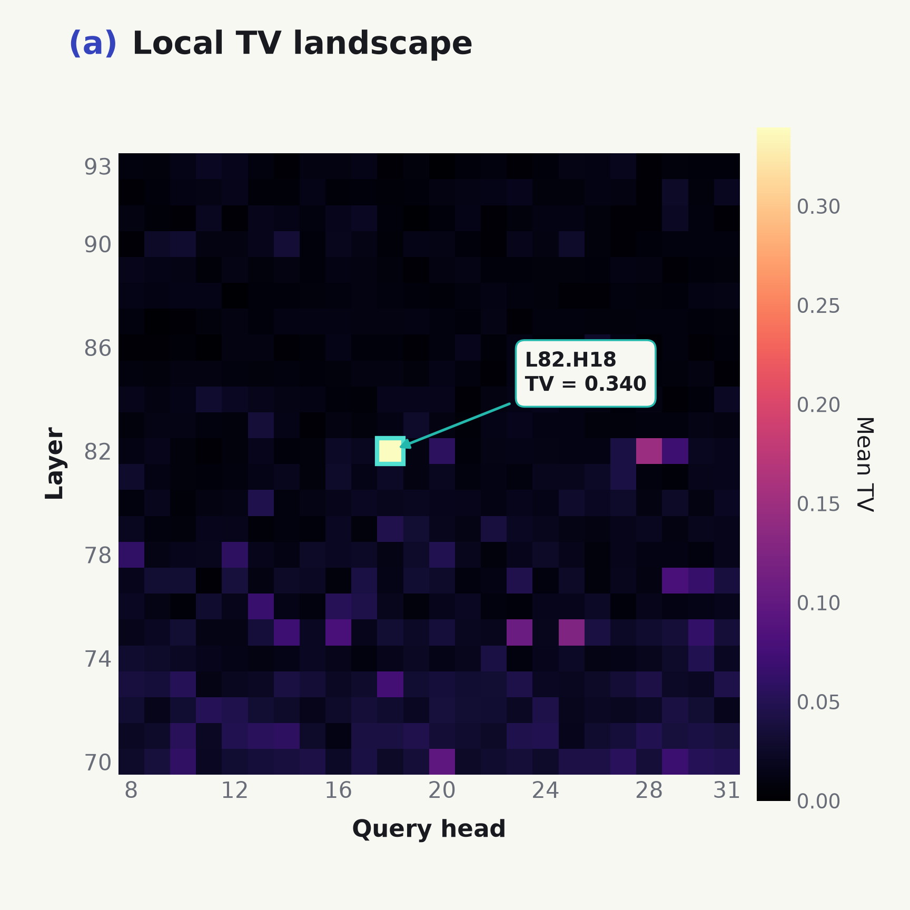
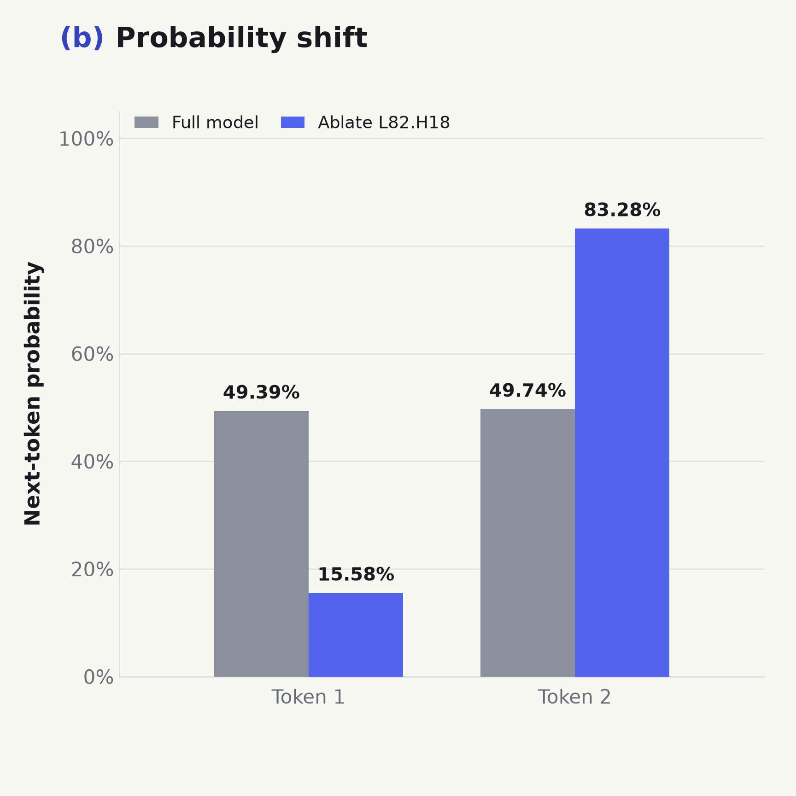
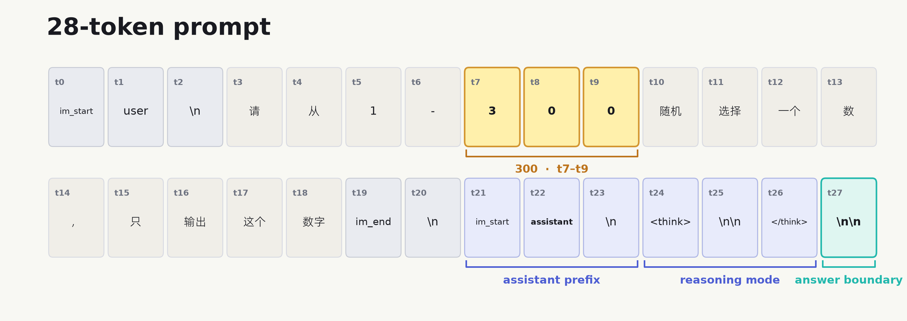
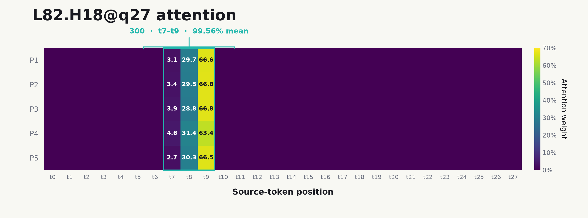
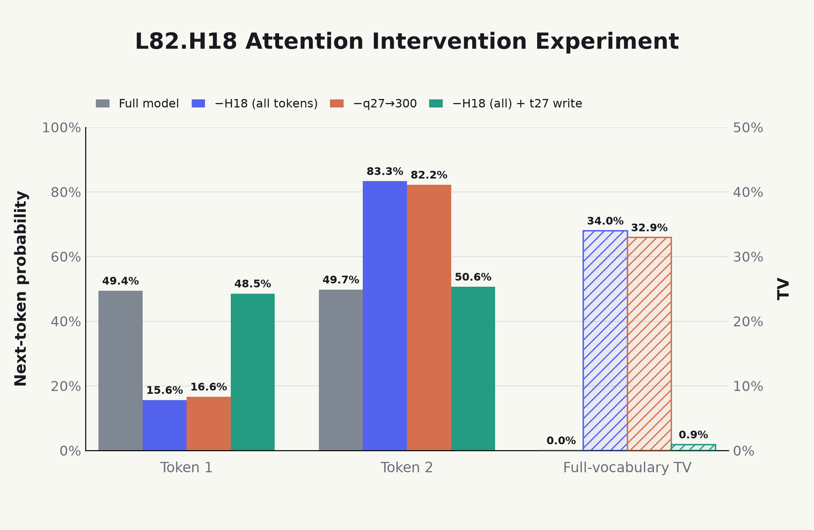
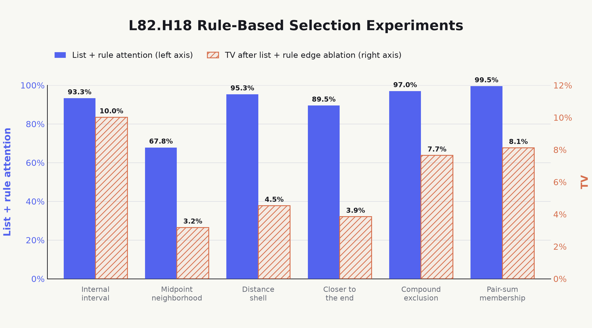
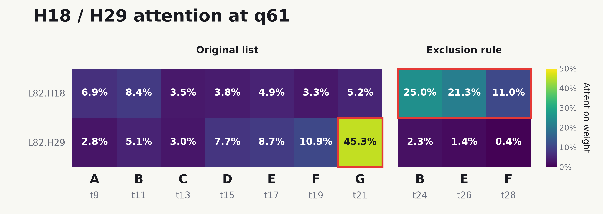
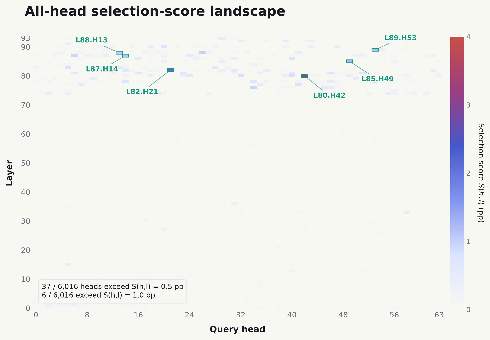

Inside a Model’s Random-Number Fingerprint: A Special Circuit in LLMs
Discussions about GPT “getting worse” and third-party APIs quietly substituting other models never really stop1. A LINUX DO post proposed a simple test: repeatedly ask a model to choose a random number from a fixed range, estimate the output distribution, and use that distribution as a statistical fingerprint of the model.
Note 1
One workaround for requests being routed to mini is described in this LINUX DO post. It worked well in my tests with a Pro account. My current guess is that retained conversations may each be subject to an IP check, so keeping more conversations may require a cleaner IP.
It is easy to see why this method works and why it is useful. But it also suggests a more interesting research question:
How is this random-number fingerprint written or generated inside the model?
To investigate this question, we began with a family of prompts asking the model to “choose a random number from 1 to 300” and intervened on its attention heads. This led to a group of heads that strongly read the numerical upper bound 300. As we varied the task, their more general role began to emerge: they read the candidate set for the current task. Their writes to the residual stream strongly affect the output only when the answer remains unresolved and downstream computation still needs to arbitrate among candidates.
More surprisingly, in reasoning tasks where the context provides the information needed for the correct answer, manually blocking the retrieval heads that carry that answer markedly amplifies the causal effect of these candidate heads. This suggests that two circuits compete inside the model. When the model can use contextual evidence to infer the answer, the reasoning circuit represented by the retrieval heads is active and the candidate-head circuit is suppressed. Once essential information is masked, the reasoning circuit is severed and the candidate-head circuit begins to dominate the model’s behavior.
If this question interests you, read on. The complete post will take about 15 minutes.
1 Background: Non-random Outputs from LLMs
Suppose we give a language model the following prompt:
Choose a random number from 1 to 300. Output only the number.
The model does not literally draw a random number during its forward pass. More precisely, a language model’s forward pass is a deterministic function from the input text to the logits for the next token. The decoder then uses a temperature T to turn those logits into a probability distribution:
p_i = \frac{\exp(z_i/T)}{\sum_j \exp(z_j/T)}.
With both the prompt and decoding configuration fixed, the model’s next-token probability distribution is therefore fixed as well.
Under sampling, a pseudorandom number generator selects a token from the distribution p. Individual outputs can vary, while the long-run statistical distribution should remain stable. This is why random-number choice can serve as a model fingerprint: different parameter sets assign different but stable probabilities to number tokens, and repeated sampling turns those preferences into a recognizable output distribution.
Under greedy decoding, the decoder simply selects the token with the largest logit. Under ideal deterministic computation, the entire generated sequence should therefore be fixed2.
Note 2
Real inference services are not necessarily reproducible bit for bit. Batching and parallel reductions in backends such as vLLM and SGLang can change the order of floating-point operations and introduce numerical differences. See Thinking Machines Lab’s Defeating Nondeterminism in LLM Inference.
The question we care about is therefore this: for a fixed family of random-number prompts, what numerical probability distribution forms inside the model, and how is that preference generated over the course of the forward pass?
2 The Head That Writes the Random-Number Fingerprint
During an LLM forward pass, QK determines where attention reads from, while OV determines what is written into the residual stream. That information is then read and processed by FFN or MoE layers before the output layer turns the resulting state into a logit distribution.
Under this simple picture, a reasonable hypothesis for random-number generation is that some middle-to-late-layer heads aggregate global information about 1–300, allowing downstream computation to understand the range from which it should select. These heads write that information into the residual stream; the range constraint shapes the final output, and the model’s fingerprint preference is encoded somewhere along this path.
To test this hypothesis, we ran experiments on Qwen3-235B-A22B. We constructed nine Chinese prompts similar to “请从1-300随机选择一个数，只输出这个数字”. All ask the model to select a random number from 1–300, but use different semantic phrasings. Every prompt has a length of 28 tokens.
The exact probabilities vary across prompts, but their overall structure remains stable: almost all next-token probability mass is assigned to digits, and 1 and 2 consistently form the dominant competition.
| P(1) | P(2) | P(3\text{–}9) | P(\text{digit}) |
|---|---|---|---|
| 49.39% | 49.74% | 0.73% | 99.86% |
We therefore use “which head most strongly disrupts this generation preference?” as the criterion for locating the key head.
2.1 Head localization
Qwen3-235B-A22B has 94 layers and 64 query heads per layer3. We examined each head through ablation: immediately before the layer’s attention o_proj, we zeroed the target head’s 128-dimensional output slice at every prefill position while leaving all other computation unchanged.
Note 3
Qwen3-235B-A22B is a distinctly depth-heavy architecture. This design introduces additional computational overhead, including a longer serial path through depth and expert communication repeated across layers. Later model designs have tended to add capacity through width—especially by increasing the number of experts—to obtain better parallelism and performance.
We measured the change between the original and ablated full-vocabulary distributions with total variation distance:
\operatorname{TV}(h,l) =\operatorname{TV}\!\left(p,p^{(h,l)}\right) =\frac{1}{2}\sum_{v\in\mathcal V} \left|p(v)-p^{(h,l)}(v)\right|.
Here, p is the original next-token distribution, while p^{(h,l)} is the distribution after ablating head (h,l). A larger TV means that the head has a stronger causal effect on the current output distribution.
Through a full screen followed by independent validation, we identified L82.H18 as the most significant head. Its full-vocabulary TV reached 0.34, the strongest effect among all heads and clearly separated from the runner-up4.
Note 4
L82.H18 also ranks first by centered full-vocabulary logit \operatorname{RMS}_{c}(h,l), defined as:
\operatorname{RMS}_{c}(h,l)= \sqrt{\frac{1}{|\mathcal V|}\sum_{v\in\mathcal V} \left(\Delta z_v^{(h,l)}-\overline{\Delta z}^{(h,l)}\right)^2}.
Here, \Delta z_v^{(h,l)} is the change in token v’s logit after ablating head (h,l), and \overline{\Delta z}^{(h,l)} is its full-vocabulary mean. \operatorname{RMS}_{c}(h,l) represents the overall effect of ablating that head on the full-vocabulary logit structure.

L82.H18.
L82.H18.After ablating L82.H18, P(1) decreased for every prompt, with a mean change of −33.80 percentage points; meanwhile, P(2) changed by an average of +33.54 percentage points, while the remaining output probabilities were nearly unchanged.
This shows that the identified L82.H18 does indeed write a strong preference within the set of numerical candidates.
2.2 Head attention distribution
We next examine the attention distribution of L82.H18. All prompts used here contain 28 tokens and share a similar structure: 300 is split across t7–t9, the model-side assistant token is at t22, and the final \n\n before the answer is at t27.

The most concentrated attention connection of L82.H18 runs from token \n\n at t27 to token 300 at t7–t9, with an average attention mass of 99.56%. Figure 3 shows the attention distributions for five representative prompts.

L82.H18@q27 attention across five representative prompts. Each row represents one prompt, each column represents a source-token position, and token 300 always occupies t7–t95.Note 5
Most of the attention falls on the final token of 300. This matches our intuition: because the forward pass proceeds token by token, only the final token’s representation can aggregate the complete information before downstream computation attends to and uses it.
In other words, just before producing the answer, L82.H18 reads almost exclusively from the numerical upper bound 300 and writes the resulting vector into the residual stream at the answer position.
2.3 Head attention intervention
To determine whether the prominent attention edge actually dominates the output shift, we performed the following L82.H18 attention interventions on the same prompts:
- Full model: no intervention; this is the baseline.
- Remove
L82.H18: zero the head’s 128-dimensional output at every position. - Remove the
q27→300attention edges: zero only the three edges from q27 to t7–t9. - Remove
L82.H18, then restore theq27→300write: first removeL82.H18, then add back at t27 the original residual-write vector contributed predominantly by t7–t9; the other token positions remain ablated.
The first three experiments test whether the q27→300 attention edges dominate the behavior of L82.H18. The fourth reverses the intervention by restoring the information these edges write into the residual stream, testing whether this can recover the effect of the complete head.

The results show that removing the q27→300 attention edges reaches 96.95% of the effect of removing the complete L82.H18 head. In other words, q27→300 reproduces nearly the entire head-level causal effect. After removing the complete L82.H18, restoring only the residual write dominated by q27→300 recovers 97.33% of the original deletion effect.
This shows that L82.H18 carries candidate-range information to the final answer position and, in doing so, writes a preference into the residual stream that ultimately appears as the model’s output fingerprint.
3 Head Generalization Experiments
So far, we have demonstrated important properties of L82.H18 in the task of choosing a random number from 1 to 300. A natural question is how well these properties generalize: can L82.H18 exhibit a similar ability in other tasks—aggregating and transporting candidate information to support the model’s output—and can it implement more general functions?
To answer this question, we conducted generalization experiments that varied the candidate type, candidate constraints, and downstream task in turn, investigating the head’s role under a range of scenario settings.
3.1 Candidate-Type Generalization Experiments
We began with the most direct generalization: if numerical candidates are replaced by another type of candidate, does L82.H18 exhibit the same properties? We replaced the original 1–300 range with an alphabetic range:
Choose any letter from A to D and output only that letter.
The result closely mirrors the numerical-range experiment. L82.H18 assigns 88.62% attention to the letter D; deleting this prominent attention edge produces as much as 30.3% TV.
We then expanded the candidates into explicit lists to test whether this property extends to general candidate sets. Every experiment used the same template:
Choose any item from the candidate list 【…】 and output only the selected item.
Only the objects inside 【…】 were changed. We constructed 40 seven-item lists: 20 canonical lists and 20 non-canonical lists.
- Canonical lists: the elements have a strong intrinsic order and are presented in that order, such as the heavenly-stem list 【甲, 乙, 丙, 丁, …】.
- Non-canonical lists: the elements have no stable intrinsic order and are arranged without a canonical sequence, such as the food list 【dumplings, noodles, rice, buns, …】.
| List type | Attention to final list item | Total candidate attention | TV after removing list-attention edges |
|---|---|---|---|
| Canonical lists | 24.09% | 75.60% | 7.2% |
| Non-canonical lists | 6.56% | 41.89% | 2.7% |
The results show that L82.H18 is substantially stronger on canonical lists. It assigns more attention both to the candidate set as a whole and to the final list item; removing its attention edges to all list-item tokens also produces substantially greater TV for canonical lists6.
Note 6
The more salient or familiar a list’s ordering relation is, the stronger the effect of L82.H18. For example, the numerical list [1, 2, 3, 4] produces a stronger effect than the seasonal list [spring, summer, autumn, winter].
We further investigated the effect of list order to determine whether this behavior depends on the intrinsic ordering relation among the elements or requires them to be displayed in that order. We completely reversed each list and constructed several additional shuffled arrangements, then observed the behavior of L82.H18. The experiment contained 280 prompts in total.
| List type | Arrangement | Attention to final list item | Total candidate attention | TV after removing list-attention edges |
|---|---|---|---|---|
| Canonical lists | Reversed | 11.27% | 62.43% | 4.8% |
| Shuffled | 17.07% | 68.90% | 8.2% | |
| Non-canonical lists | Reversed | 10.65% | 44.76% | 2.6% |
| Shuffled | 7.54% | 44.40% | 2.5% |
Overall, list order has little effect. Attention and TV remain essentially unchanged across the original, reversed, and shuffled non-canonical lists. Only fully reversing the canonical lists produces a noticeable decline in TV, which nevertheless remains substantially higher than under every non-canonical condition. Canonical lists retain relatively high attention and TV across multiple arrangements. This suggests that L82.H18 can recognize that a candidate set has a strict intrinsic order, rather than relying only on the order in which the list appears in the prompt, and can carry this information into the downstream residual stream to write the model’s preference7.
Note 7
It remains unclear whether this process arises during pretraining or post-training. My inclination is that, for numerical candidate inputs, the higher probability assigned to 1 and 2 than to other digits is determined by the vast distribution of numerical data in the pretraining corpus; however, a model’s pronounced preference between 1 and 2 is more likely to be encoded during post-training. This may also explain why all models favor generating 1 and 2, while their exact probabilities form distinct fingerprints.
3.2 Candidate-Constraint Generalization Experiments
Next, we examine generalization across candidate constraints: when we add constraints to the full candidate set and change the set of allowed choices, does L82.H18 shift its attention to the constraints defining that set? We first run a simple experiment, retaining the original 1–300 range while additionally requiring the selected number to be less than 150:
请从1-300中小于150的数里随机选择一个，只输出这个数字
In English: “Randomly choose a number less than 150 from the range 1–300. Output only that number.”
At the final answer position, L82.H18 assigns 83.42% attention to 150 in the added constraint “less than 150,” while attention to the original upper bound 300 falls to 9.07%. Removing this head’s write at the final answer position produces 44.4% TV. This shows that its primary reading location shifts to the new candidate boundary, while its write still substantially affects the output probability distribution.
We then extend the experiment to different types of canonical lists (see Section 3.1), constructing eight active subsets for each list. We explicitly specify the set allowed for the current task using a fixed template, translated here:
The full candidate set is 【…】. The allowed set for this task is 【…】. Randomly select one item from the allowed set and output only the answer.
For example, given the letter list 【A, B, C, D, E, F, G, H】, we additionally specify 【A, C, E】 as the allowed set. We separately measure the attention that L82.H18 assigns at the final answer position to the restated active set and the original full set, and the TV after jointly removing its attention edges to both sets:
| List | List elements |
Active-set mean attention |
Original-set mean attention |
Mean TV after removing attention edges |
|---|---|---|---|---|
| Heavenly stems |
甲、乙、丙、丁、 戊、己、庚、辛 |
61.56% | 15.94% | 5.3% |
| Letters |
A, B, C, D, E, F, G, H |
53.73% | 28.25% | 12.7% |
| Numbers |
10, 20, 30, 40, 50, 60, 70, 80 |
45.36% | 31.07% | 15.5% |
| Months |
一月、二月、三月、四月、 五月、六月、七月、八月 |
64.38% | 12.63% | 8.5% |
| Scale |
do, re, mi, fa, sol, la, si, 高音do |
53.49% | 9.04% | 3.5% |
| Zodiac |
鼠、牛、虎、兔、 龙、蛇、马、羊 |
63.85% | 6.08% | 2.8% |
Across list types, L82.H18 assigns more attention on average to the active set than to the original full set, with overall means of 57.06% and 17.17%, respectively. This shows that additional constraints do redirect its primary attention toward the candidates currently allowed. Jointly removing its attention edges to the original full set and the active set produces an overall mean TV of 8.1%, showing that reading candidate information from these two locations jointly influences the output probability distribution.
We further construct more complex rule-based list-selection tasks. Instead of directly listing the active candidate set, we provide the full list and a filtering rule, asking the model to choose any candidate satisfying that rule. The rules include internal interval, midpoint neighborhood, distance shell, closer to the end, compound exclusion, and pair-sum membership. The bar chart below shows mean L82.H18 attention to the list and rule, together with the corresponding edge-ablation TV, for each task type.

L82.H18 across six rule-based selection tasks. Solid bars show total attention to list and rule tokens (left axis); hatched bars show full-vocabulary TV after removing the corresponding attention edges (right axis).The results are similar to the earlier experiments: L82.H18 allocates most of its attention to the list and rule descriptions. Removing its attention edges to these positions and renormalizing attention over the remaining sources produces mean TV values of 3.2%–10.0% across task types, showing that these reads have a substantial causal effect on the output probability distribution.
In addition, during these experiments, we also observed functional differentiation between heads. Although the preceding experiments focus on L82.H18, it is not the only head with similar properties. For another head with similar functionality in the same layer, L82.H298, we find different reading emphases in constrained-choice tasks: L82.H18 focuses more on the constraints defining the candidate range, whereas L82.H29 focuses more on the final candidate in the original list.
Note 8
This head was localized using a full-head screening and independent-validation approach similar to Section 2.1. On the original 1–300 random-number task, its mean attention to 300 ranks first among all 6,016 heads. Its centered full-vocabulary logit \operatorname{RMS}_{c}(h,l) ranks second among all heads.
The following prompt provides an intuitive example. We retain the original Chinese text to match the token positions in the experiment: “给定有序字母列表【A，B，C，D，E，F，G】。B、E与F均不可选择；请在其余字母中任选一项。只输出所选字母，不要解释。答案：” The prompt gives the ordered list A–G, excludes B/E/F, and asks for any remaining letter without explanation. At the same final answer position, q61, L82.H18 assigns 57.60% total attention to the constraint tokens (such as B/E/F). In contrast, L82.H29 assigns 45.33% attention to the final list item G. Removing their corresponding high-attention edges produces TV values of 23.9% and 5.0%, respectively.

q61 for L82.H18 (top row) and L82.H29 (bottom row) on the same prompt. Each column is an actual source token: A–G from the original list on the left, and the repeated B/E/F from the constraint on the right. Original token positions appear below the letters.This example demonstrates differences between heads in their reading locations and causal contributions. It suggests that the model contains multiple computational circuits carrying different aspects of information, which may converge in subsequent deeper computation to jointly influence the downstream task.
3.3 Task-Type Generalization Experiments
We next ask whether the behavior of L82.H18 generalizes to downstream tasks rather than being limited to random selection. We keep the input range fixed at 1–300, construct a variety of downstream tasks, and observe the head’s behavior. Initial experiments suggest that the head’s effectiveness is related to the number of valid candidates allowed by the task. Specifically, we divide the tasks into two groups:
- Non-unique tasks: the task admits multiple valid answers, and outputting any one of those candidates satisfies the task requirements.
- Unique tasks: the task has a unique valid answer, and only that candidate satisfies the task requirements.
| Task type | Attention to 300 |
TV after removing the L82.H18 attention edges |
|---|---|---|
| Non-unique tasks | 92.231% | 13.7% |
| Unique tasks | 58.862% | 0.5% |
In both groups, L82.H18 shows substantial attention to 300. However, ablating the head produces a substantial TV change only in the non-unique tasks9.
Note 9
Not every non-unique task produces a substantial TV change. For example, in the task “choose a number greater than 250 from 1–300,” the TV effect is only 0.3%. One plausible explanation is that although the task admits multiple valid candidates, the first output token of every valid candidate must be 2, so it is unaffected.
Therefore, L82.H18 cannot simply be described as a head that operates only in random-selection tasks. It still attends to the candidate boundary in unique-answer tasks, indicating that it transports range information to the answer position. It appears, however, that downstream tasks use this information strongly only when the answer has not yet been fixed and the model must still distribute probability among valid candidates10.
Note 10
In fact, I did not recognize this distinction at first and mistakenly thought that the head became effective whenever the output required global information. Further experiments ruled out that hypothesis. The mistaken inference arose because many non-unique tasks require global information to determine the valid candidates.
We further test this claim with a straightforward intuition: if the substantial effect of L82.H18 indeed arises when the model remains uncertain about the answer, then the head should also have a substantial effect on a sufficiently difficult task with a unique answer whenever the model cannot infer that answer effectively on its own.
We therefore ran a controlled comparison using two classes of unique-answer tasks that both require global information, with one class designed to be simple and the other difficult. We kept their wording and length as similar as possible to reduce confounding from prompt length and presentation. As in the preceding experiments, the model remained in non-thinking mode throughout. We compared accuracy and list attention on ordered and shuffled lists, together with the TV produced by removing the attention edges to the list elements.
| Task difficulty | Ordered | Shuffled | ||||
|---|---|---|---|---|---|---|
| Accuracy | List attention | List-edge TV | Accuracy | List attention | List-edge TV | |
| Simple tasks | 100.0% | 10.08% | 0.24% | 98.0% | 2.47% | 0.24% |
| Difficult tasks | 52.5% | 66.17% | 5.39% | 52.0% | 60.38% | 4.40% |
The results are broadly consistent with this prediction. Accuracy on the simple tasks reaches 100%, indicating that the model has already fixed the answer before responding; attention to the list is low, and list-edge TV is also only about 0.24%. In contrast, accuracy on the difficult tasks is only about 52%, indicating that the model cannot reliably infer the unique answer; here, list attention rises to roughly 60%, while list-edge TV reaches 5.39%. Thus, when the answer has not been successfully inferred, L82.H18 continues to read more information from the original list and has a stronger causal effect: the candidate information it transports substantially alters the output probability distribution.
To test whether this relationship holds across a broader range of difficulty, we ran additional tasks and summarize each task’s success rate and list-edge TV in the scatter plot below. Each point represents one task. As the plot shows, more difficult tasks do indeed exhibit higher TV. Their correlation coefficient is -0.84.
Figure 7: Task success rate and L82.H18 list-edge TV. The x-axis shows task success rate; the y-axis shows full-vocabulary TV after removing the final-position L82.H18 attention edges to all list elements.
At this point, our claim about the conditions under which L82.H18 becomes effective appears to have preliminary support.
3.4 Generalization to Long-Form Reasoning
The experiments in Section 3.3 all disabled thinking mode. To test whether the claim above about the conditions under which L82.H18 becomes effective generalizes to long-form reasoning, we enabled thinking mode, let the model first generate a complete reasoning trace and then output the answer directly when the answer phase began, and finally measured the metrics of L82.H18 at the final answer position after </think>. We selected several representative tasks spanning multiple accuracy levels; the comparison between non-thinking and thinking modes is shown below.
| Task | no-think | think | ||||
|---|---|---|---|---|---|---|
| Accuracy | List attention | List-edge TV | Accuracy | List attention | List-edge TV | |
| Closest to endpoint geometric mean | 2.08% | 81.41% | 8.61% | 95.83% | 5.38% | 0.015% |
| Closest odd-position rank mean | 18.75% | 68.54% | 8.06% | 100% | 7.30% | 0.008% |
| Closest to mean rank | 22.92% | 72.08% | 6.93% | 100% | 6.01% | 0.007% |
| Item after the largest rank gap | 29.17% | 71.92% | 5.79% | 100% | 5.28% | 0.011% |
| Earliest canonical even-position item | 43.75% | 55.38% | 3.97% | 97.92% | 4.10% | 0.002% |
| Canonical item 2 | 70.83% | 54.34% | 3.15% | 100% | 11.24% | 0.003% |
| Displayed item 5 | 93.75% | 40.14% | 1.24% | 100% | 4.46% | 0.003% |
With thinking enabled, task accuracy rises to nearly 100%, while list-edge TV falls to almost 0% across all tasks; at the same time, attention assigned to the original list drops sharply. This mirrors the earlier observation: once long-form reasoning has inferred the answer, the model’s response relies very little on L82.H18 to transport information from the original list11.
Note 11
Another point worth noting is that the higher a task’s success rate, the less attention L82.H18 assigns to the list. It is currently unclear whether reduced attention directly causes the smaller TV, or whether attention and TV changing together with task difficulty reflects a deeper circuit mechanism. I personally favor the latter interpretation.
Thinking mode, however, inserts a long reasoning trace between the input list and the final answer. The reduction in TV might therefore be caused merely by the increased distance between the list and the answer position. To rule out this explanation, we ran a controlled experiment that held the input list and task fixed while constructing four strictly length-matched combinations: the Cartesian product of no-think versus forced-think and correct reasoning versus a length-matched placeholder. Here, forced-think means enabling model reasoning and filling the reasoning segment with prepared information; correct reasoning is a reasoning process that helps derive the answer, whereas the length-matched placeholder contains task-irrelevant content of exactly the same length. The final answer position has the same sequence length in every condition.
| Condition | Exact-answer accuracy | Original-list attention | List-edge TV |
|---|---|---|---|
| No-think + correct information | 100% | 5.897% | 0.140% |
| No-think + length-matched placeholder | 25.0% | 57.133% | 8.197% |
| Forced-think + correct reasoning | 100% | 6.358% | 0.009% |
| Forced-think + length-matched placeholder | 23.6% | 61.551% | 5.266% |
The length of the prompt or reasoning does not disable L82.H18: list-edge TV remains above 5% in both length-matched placeholder conditions. Only when the context includes reasoning sufficient to determine the answer does accuracy rise to 100% while list attention and TV fall sharply together. The change is therefore driven neither by long-range distance nor by whether thinking is enabled, but by whether the answer has already been fixed by the context.
These results further strengthen the argument in Section 3.3: whenever the answer has not been successfully inferred or otherwise determined, the candidate information transported by L82.H18 substantially affects the output distribution.
3.5 Cross-Head Functional Generalization Experiments
The preceding experiments focus primarily on L82.H18. As Section 3.1 shows, however, these heads have a strong causal effect only when the list has a pronounced internal order, which limits the range of settings in which they operate.
A natural question is whether lists with weaker order relations still recruit a family of heads with a similar function. From the perspective of head specialization and Transformer circuits, such heads should exist12. We therefore test whether comparable heads can be found on general lists.
Note 12
At a higher level, I prefer to view this as a form of distributed information, especially as models become larger and more capable. Multiple heads may perform similar functions while differing in the specific settings in which they become active.
Following the setup of Section 2, we construct random unordered lists of Chinese single-token candidates and run both random-choice and deterministic-choice tasks. We then scan all 6,016 query heads, ablating each output slice immediately before the attention o_proj. Based on the preceding observations, we define the selection score as
S(h)=\max\!\left(\Delta \operatorname{TV}_h,0\right)\times A_h,
where \Delta \operatorname{TV}_h is the head-ablation TV difference between random and deterministic choice, and A_h is attention to the candidate list under random choice. The score requires both candidate-list reading and a causal effect concentrated in the unresolved condition, reducing interference from biases such as syntactic or ICL heads.
The six highest-scoring heads are L80.H42, L82.H21, L85.H49, L89.H53, L87.H14, and L88.H13. They are also the only heads with S(h)>1 pp.

The higher-scoring heads all lie in deep layers, while shallow and middle-layer heads are almost entirely white. This is consistent with the view that the ability to aggregate information streams and influence downstream computation appears mainly in deep layers. Beyond the selected heads, many late-layer heads also have weaker but visible S(h) responses, producing a dispersed functional pattern. This is another instance of the distributed information described in Note 12.
4 Further Tests of the Candidate-Competition Circuit
The experiments in Section 3 allow us to form a preliminary account of L82.H18. When the answer has not been successfully inferred and the model is forced to guess among several valid candidates, L82.H18 writes candidate information carrying the model’s fingerprint preference into the answer position. This role is not restricted to the original 1–300 random-number task: it generalizes across different list types, candidate ranges, and active candidate sets defined by additional constraints.
This section tests that account more closely. Does the candidate-competition pathway become causally important whenever the model cannot directly infer the answer, even when that failure has different causes? We first remove decisive evidence from the problem so that the answer is objectively underdetermined. We then keep the evidence intact but ablate the attention heads responsible for retrieving it, asking whether the candidate pathway gains causal weight in tasks that the intact model can solve correctly.
4.1 Candidate Betting Under Insufficient Evidence
To make “the model is guessing” behaviorally testable, we construct four types of temporary three-hop archives. The model must follow one of four relation chains—person→badge→room→key, supplier→container→warehouse→seal, researcher→project→server→access code, or courier→route→station→package—and select the unique answer from candidates A–H. Each random mapping has four core conditions: decisive evidence repeated near the question, decisive evidence available only in the distant context, the key records for two candidates removed simultaneously, and the answer stated directly before the question. The experiment covers 16 independent mappings, 176 prompts, and 1,040 forward passes.
Here, “guessing” is not defined by the model’s self-reported confidence. We additionally permute the candidate list and restore the missing relation chain. When decisive evidence is absent, changing only the list order changes the preferred answer in 81.25% of cases; after the key chain is restored, 93.75% of cases return to the correct answer. The model is therefore genuinely influenced by the remaining candidates under missing evidence rather than having reached a fixed answer through another route. Notably, 7 of the 16 ambiguous cases still assign at least 90% top-1 probability to one candidate, so a high-confidence output does not imply sufficient evidence.
| Condition | L82.H18 whole-head TV |
L82.H29 whole-head TV |
|---|---|---|
| Near, determined | 0.105% | 0.120% |
| Distant, determined | 1.172% | 2.895% |
| Objectively ambiguous | 10.470% | 11.607% |
| Answer stated directly | 0.028% | 0.028% |
Both heads become much more causally important in the objectively ambiguous condition. L82.H18 and L82.H29 assign an average of 66.7% and 65.1% attention to the candidate list, respectively; deleting only their attention edges to that list produces mean TV values of 10.95% and 5.45%. By contrast, when the answer is stated directly, L82.H18 still assigns 58.8% attention to the list, yet its whole-head TV is only 0.028%. Reading the candidate list and having that write actually influence the answer are therefore distinct: downstream computation uses the candidate write strongly only while the answer remains unresolved.
This conclusion also has a clear boundary. On cases where the evidence is complete but the model naturally fails at distant retrieval, L82.H18 TV is almost unable to distinguish reliable from unreliable retrieval, and L82.H29 has only moderate predictive power. These heads are therefore good markers of the specific state in which decisive evidence is missing and the model must still bet among explicit candidates, but they are not universal detectors of every reasoning failure or uncertain state.
4.2 Conditional Takeover After Removing Retrieval Heads
The preceding experiment removes evidence from the input itself, so it establishes only that insufficient evidence and high candidate-head TV co-occur. To test for a causal transfer between circuits, we keep both the task and the decisive evidence intact and use 20 retrieval heads identified in an independent experiment as the determined-retrieval pathway R. We denote the candidate-competition pathway by C: for the canonical sequence A–H, C consists of L82.H18/H29; for randomized lists of Chinese single-token nouns, it consists of L80.H42/L82.H21/L85.H49/L88.H13, identified through a new full-head scan. Every prompt is answered correctly and stably by the intact model.
Each prompt is run under four conditions: clean, retrieval pathway removed (−R), candidate pathway removed (−C), and both removed (−R−C). The key quantity is not the natural effect of removing C, \operatorname{TV}(clean,-C), but its conditional effect after damaging R, \operatorname{TV}(-R,-R-C). A large increase in the latter means that the candidate write has gained causal weight after the retrieval pathway was damaged.
The initial factorial experiment provides conditional support. In the strongest unordered-candidate example, removing C in the natural state produces only 0.016% TV; after removing R, the conditional TV of the same candidate pathway rises to 42.315%. The probability of the correct token falls from 99.97% under clean to 49.87% under −R, then recovers to 92.10% when C is also removed. Thus, once retrieval is damaged, the candidate pathway enters the final competition and, in this example, introduces a competing candidate rather than continuing to transport the original correct answer.
This behavior is not a universal hard switch. Three of the four candidate-by-retrieval combinations contain strong conditional increases, but the canonical-sequence-by-retrieval-head combination does not show a stable effect; there are also counterexamples in which retrieval is materially damaged while conditional candidate TV remains below 1%. In a broader sweep over 226 distinct prompts, only eight satisfy the strict criteria of natural candidate TV no greater than 0.5%, retrieval TV at least 5%, and conditional candidate TV at least 5%, with most positives concentrated in four- or five-hop tasks. The current results are therefore better explained by a mixture of parallel writes from determined retrieval, candidate competition, and other backup pathways. Removing retrieval heads can shift causal weight toward candidate writes along some solution paths, but whether takeover occurs—and which candidate head takes over—still depends on the particular prompt and downstream residual state.